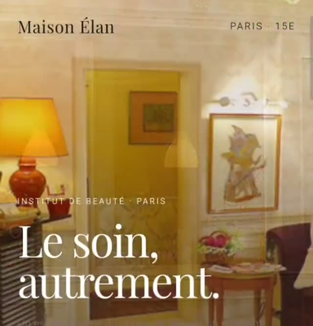
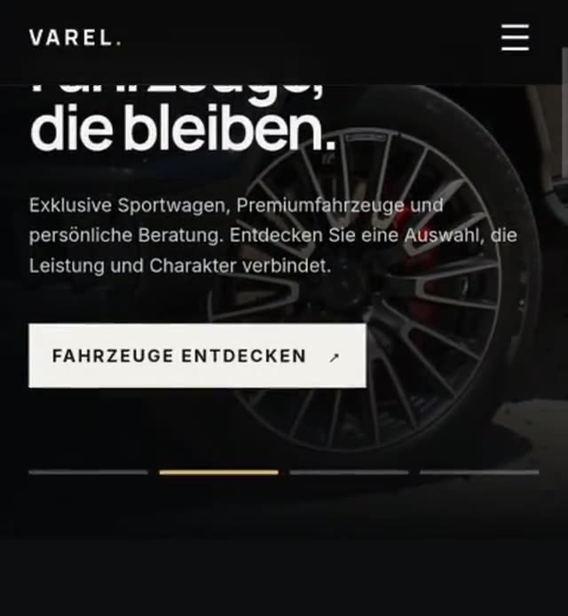
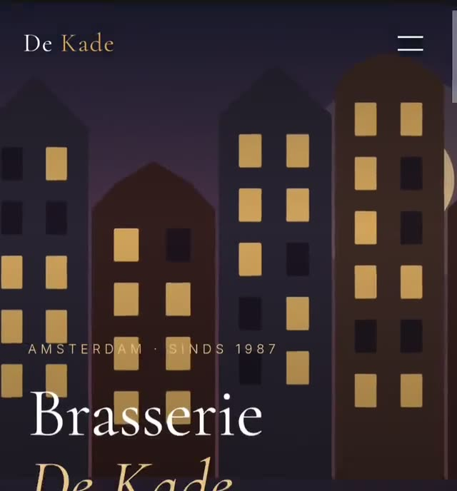

01 LIVE PREVIEW PLAYBEAUTY / LANDING
Салон красоты
Элегантный промо-сайт с акцентом на атмосферу бренда, услуги и визуальную подачу.
Кодирую идеи в работающие продукты
Создаю быстрые, адаптивные и визуально сильные сайты — от первого экрана до готового продукта.
SCROLL↓Не собираю сайты по шаблону.
Сначала — идея. Потом — система.
Продумываю структуру, визуальное направление, поведение интерфейса и адаптацию под разные устройства. В результате — не просто красивая страница, а аккуратный рабочий продукт.
03 / 03
LIVE PREVIEWS

01 LIVE PREVIEW PLAYBEAUTY / LANDING
Элегантный промо-сайт с акцентом на атмосферу бренда, услуги и визуальную подачу.

02 LIVE PREVIEW PLAYAUTOMOTIVE / BUSINESS
Премиальная подача автомобилей, понятная навигация и акцент на целевое действие.

03 LIVE PREVIEW PLAYRESTAURANT / BRAND
Атмосферный сайт с современной типографикой, меню и акцентом на бронирование.
Есть опыт со всем стеком ниже: от чистого фронтенда до серверной логики, API и автоматизации.
Структура, визуал, адаптив и готовый deployment.
↗Сайты под услугу, продукт, бренд или локальный бизнес.
↗Интерфейсы, JavaScript, React, серверная часть и API.
↗Python, Node.js, Telegram, интеграции и рабочие инструменты.
↗Мне нравится превращать сложную задачу в понятный интерфейс и рабочий продукт.
В работе соединяю визуальную часть и техническую реализацию: слежу за скоростью, адаптивностью, чистотой кода и тем, как человек проходит путь по сайту.
Визуально
выразительно
Технически
аккуратно